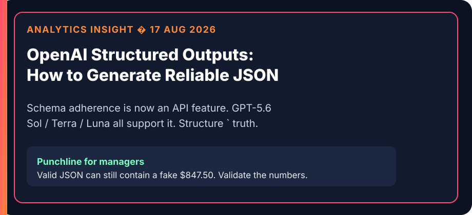

Structured Data from Free Text
MGT 409 · Lecture 2 · Tauhid Zaman
PDFs do not close the books. JSON might.
Instructor outline — remove before class.
40 minutes, then vibe
| Clock | Beat |
|---|---|
| 0–4 | Cold open: last week an API call; this week fields a spreadsheet can eat |
| 4–10 | Fluency is not a receipt. ERP / audit / P&L want fields. Gartner pile + IDP TAM |
| 10–16 | Homework 1 is a pipeline, not a chatbot — walk the diagram |
| 16–22 | JSON is the contract. Two files named “prompts.” Do not mix them |
| 22–32 | Spine: LLM extract → LLM recon → Python P&L. One purchase, three docs |
| 32–37 | Schema ≠ truth. Validator. Prompt anatomy for the lab |
| 37–40 | Handoff: 40-min vibe (P2 miniature) + HW1 map. Do not solve the zip |
Then 40 minutes of vibe. If you are still on news at minute 18, skip to the pipeline.
Last week you called an API. This week it has a job.
- Lecture 1: one prompt, one reply, tokens cost money.
- Lecture 2: force the reply into fields a spreadsheet can eat.
- Homework 1: Spoke & Wrench’s January shoebox → an income statement.
Unstructured in. Typed rows out.
The intern who never says “I don’t know”
source_file and a number a human can re-check- Frontier models are fluent. Fluency is not a receipt.
- Homework 1: missing fields go in
fields_not_found. Do not invent values.
Fast intern, not a creative bookkeeper. If it is not on the page, it is null.
The pile is still 70–90% unstructured

Gartner MQ for Document Management 2026: 70–90% of enterprise data is unstructured. Fortune Business Insights: IDP $10.57B (2025) → $14.16B (2026), $91B by 2034 — order of magnitude, not a precise TAM. Gartner · Fortune Business Insights
Homework 1 is a $14 billion industry wearing a bicycle-shop costume.
Homework 1 is a pipeline, not a chatbot
Dark boxes call the LLM. Light boxes are your code. One script per problem — testable and gradable.
JSON is the contract
- Name every field. Type every field. Enums beat vibes:
business|personal. - Missing ‚Üí
null+fields_not_found. Never a creative$0.00. - If two PDFs disagree, a recon-log row — not a silent average.
A schema that asks for unobservable fields is a hallucination machine.
Two files both named “prompts.” Do not mix them.
prompts/*.md
Runtime contracts your scripts load. HW1 wants receipts_extract.md, bank_extract.md, card_extract.md, reconcile.md.
AI_prompts.md
The log of what you typed to Codex/Cursor, in your own words, problem by problem. Graders read this. Do not paste the assignment URL.
One file the script reads. One file the grader reads. Both required.
Who does which job?
LLM · extract
Messy PDF text → typed rows. Layout, vendor names, “is this a debit?” Language understanding. P2–P4.
LLM · reconcile
Same purchase on a receipt and a card. Mixed deposits. Emails that explain a mismatch. Written resolution. P5.
Python · roll up
Income statement math from the recon log. No LLM. If you hardcode totals, you failed the assignment. P7.
Extract with the LLM. Reconcile with the LLM. Add with Python.
One purchase, three documents
- Sum all three and you triple-count. P5 log row = one reconciled amount.
- Owner’s card + shop checking:
businessvspersonalis not a vibe. Show what you excluded. - P6: three calls you were least sure about. At least one
confidence: low.
Schema ≠ truth. Your Python is the adult.

Model
Reads messy layout. Invents enums. Swaps 8 and 3. Writes a novel inside a JSON string.
Your Python
Required keys exist. amount_usd is a number ‚â• 0. Date looks like ISO. Category is in the allow-list.
Analytics Insight, 17 Aug 2026: “Reliable structure does not mean correct facts.” Analytics Insight · OpenAI Structured Outputs
Constrained decoding will not save you from a hallucinated amount. Fail → retry or park it. Never silently “fix” dollars.
Extraction prompt anatomy
- Role: AP clerk for a New Haven bike shop — not “helpful assistant.”
- Input: document text +
source_filename. - Schema: every field, type, example, enum.
- Null policy: if it is not on the page,
null+ list the field. - Output: JSON only. No markdown fences. No “sure, here you go.”
That file lives in prompts/. The chat you used to write the script lives in AI_prompts.md.
‚Üí Vibe coding (~40 min)
One fake receipt ‚Üí JSON. Prompt file. Validator. Then a miniature recon + Python total.
This is a miniature of HW1 Problems 2 / 5 / 7 — not the Spoke & Wrench zip.
Homework 1 map (do not solve it from this slide)
- P1 log · P2–P4 extract receipts / bank / card · P5 LLM recon log
- P6 three judgment calls (one must be low confidence) · P7 Python P&L
- P8 HTML for humans · P9 pipeline diagram · P10
hw1.zip
Work one problem at a time. Screenshot the card. Do not paste the assignment URL and ask for the complete zip.
What to remember
- Business runs on fields. LLMs map messy text ‚Üí JSON if the contract is strict.
- Schema guarantees shape. Code guarantees the number is sane. You guarantee the policy.
- Extract with the LLM. Reconcile conflicts with the LLM. Add with Python.
Next lecture: give the model tools — search, APIs — so it can leave the PDF.